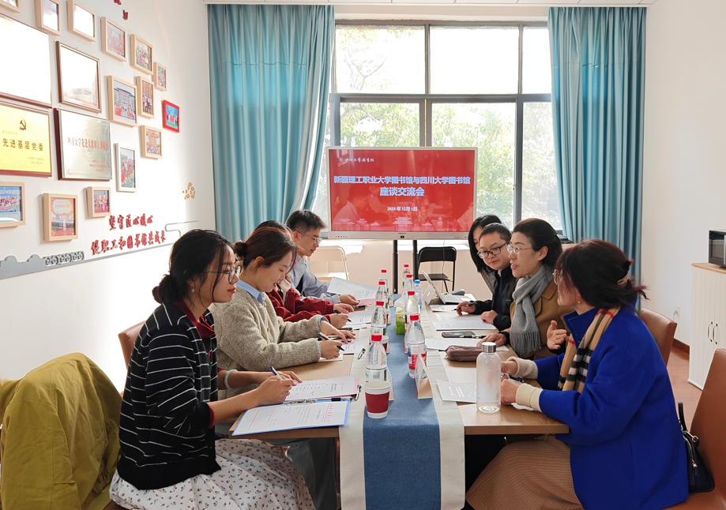

学院通知 · 教学通知
新疆理工职业大学图书馆一行赴四川大学图书馆调研交流
发布时间：2025-12-03 09:56:02
2025年12月1日下午，新疆理工职业大学图书馆副馆长贾文菲一行4人到访四川大学图书馆开展调研交流，交流会在望江校区工学图书馆五楼职工之家举行。四川大学图书馆党委副书记兼纪委书记、副馆长杜小军，文献服务中心副主任梁金萍、信息技术中心副主任邵云梦及学习支持中心馆员王圣洁热情接待了来访人员。 会上，杜小军对新疆理工职业大学图书馆同仁的到来表示热烈欢迎，简要介绍了川大图书馆在长期发展中形成服务理念和特色工作。随后，川大图书馆围绕图书馆顶层设计与智慧化建设、特色资源建设与深度服务、学习空间创新与读者服务、信息素养教育体系及管理保障与馆员队伍建设五大核心主题，详细分享了在智慧化平台搭建、特色馆藏开发、空间功能升级、素养课程体系构建及馆员队伍培育等方面的实践经验与创新举措。新疆理工职业大学图书馆一行结合自身发展实际，就相关业务推进中的重点难点问题与川大图书馆展开深度研讨，交流了各自在行业探索中的思考与感悟。交流期间，新疆理工职业大学图书馆一行实地参观了工学图书馆的开心花园、闳声角、3D打印区、考研加油站和“52经典阅读”主题展区等特色空间，直观感受了其在学习空间创新与读者服务融合方面的实践成果。 此次调研交流搭建了校际图书馆经验共享的优质平台，实现了理念碰撞与智慧交融，进一步拉近了两校图书馆的联系与共识，为双方优化业务布局、提升服务质量提供有益参考。 文字：党政办公室 刘光辉 图片：党政办公室 肖敏
